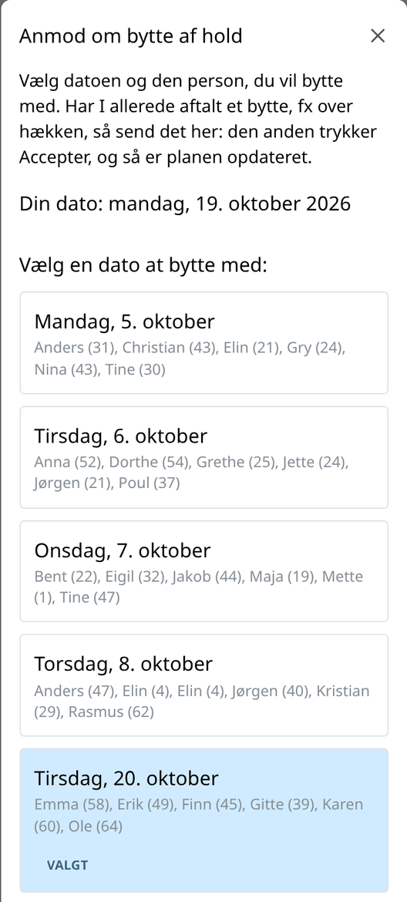
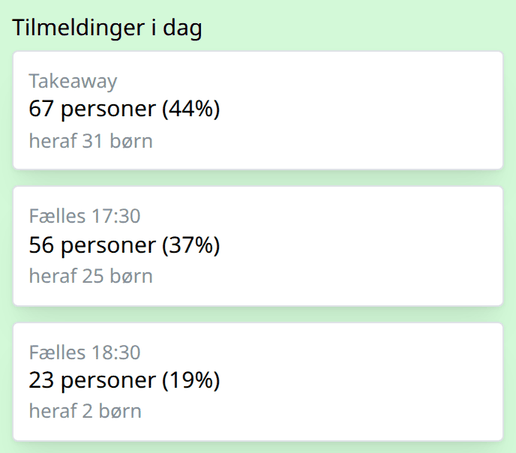
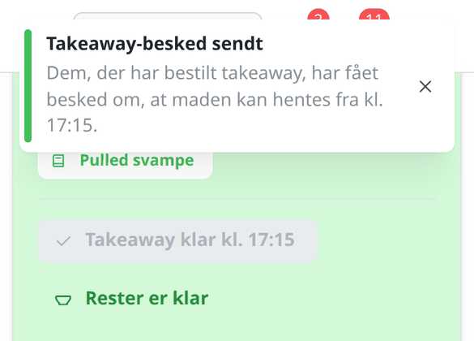

KB Intra · oktober 2026
Madhold
Dine maddage, bytte, takeaway og rester: sådan gør du i KB Intra.
kb-intra.dk
KB Intra · oktober 2026
Dine maddage, bytte, takeaway og rester: sådan gør du i KB Intra.
kb-intra.dk

4
Madhold → Min profil.

7
Naboen får en notifikation og trykker Accepter under Bytte. Har I aftalt byttet på forhånd, er det sådan, I gennemfører det.


10
På din maddag ligger der en grøn boks øverst på forsiden:

12
Takeaway hentes normalt kl. 17:30. Send kun en besked, hvis maden er klar før.
Beskeden går ud med det samme til dem, der har bestilt takeaway, og kan kun sendes én gang om dagen.

